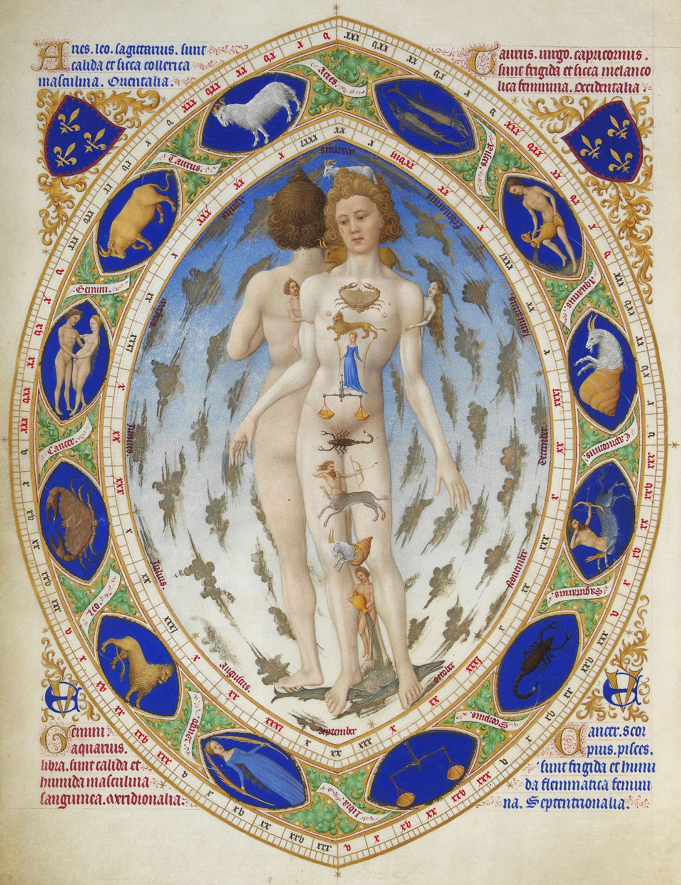

占星術

縱觀其歷史，占星術長期被視為學術傳統並普遍存在於學術界中，與天文學、鍊金術、氣象學和醫學關係密切。占星術亦曾流行於政治界；從但丁與喬叟到莎士比亞、洛佩·德·維加和卡爾德隆·德·拉·巴爾卡，他們的多部文學作品中都曾提到過占星術。
然而，科學革命開始後，占星術已受到廣泛質疑；它在理論和實驗上均已被成功挑戰，並被證明毫無科學有效性或解釋力。占星術因此失去了它在學術和理論上的地位，信仰占星術的人群亦大幅減少。在現今，占星術被公認為是偽科學。1350一項始於1958年、針對2000多名在英國倫敦一帶出生且出生時間彼此只差幾分鐘的人做的長期追蹤研究顯示，這些人彼此間在性格、職業、智能、焦慮等級、各項技能的能力各方面的表現，皆不相似，而根據占星術的理論，這些人在這些方面應該彼此會非常相似；另外對於700多名占卜師的研究顯示，儘管這些占卜師對自己的預測相當有自信，但他們的預測結果並不優於亂猜所得到的結果。
現如今，占星術主要的作用是給予有需要的人們心理引導，幫助人們更好地認識自己。
詞源
占星學的英文astrology是來自早期拉丁文的單字astrologia，該單字派生於希臘文的ἀστρολογία ─ 由ἄστρον，希臘拉丁轉寫astron（「star」，星宿）以及-λογία，希臘拉丁轉寫-logia（「study of」，研究 ─ 「account of the stars」，星宿的解釋）所組成。Astrologia後來導入了『星宿占卜』（star-divination）的含義並且與astronomia（天文學）一起成為科學術語而使用。占星術的觀點
因為占星術的理論是依賴人的理解來延伸，因此經常缺乏廣泛、確定和精密的術語。一個占星術士只能按自己的理解做假設，來獲取市場認同與收入。但最基礎的占星術系統，可以從完全的天文觀察中做出預言，但通常過於科學化而無法被大眾理解或運用。占星術有自己的術語，符號，但尚未完成堅實的基本理論，來讓占星術士可以不依靠直覺和「第六感」工作，因為人的情感需求通常遠高於理論描述，每個占星術士必須按自己的理解來做預測，就如同醫生、股票分析師一樣。